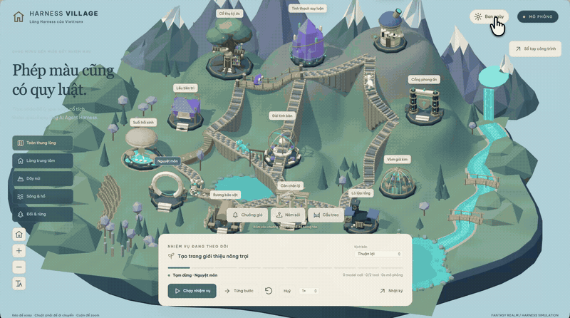
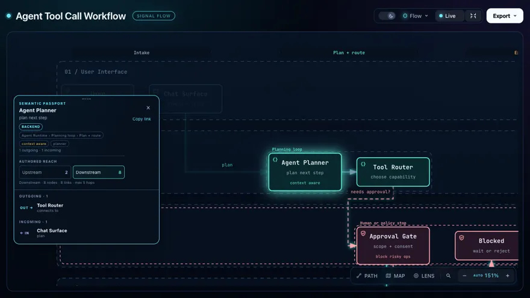
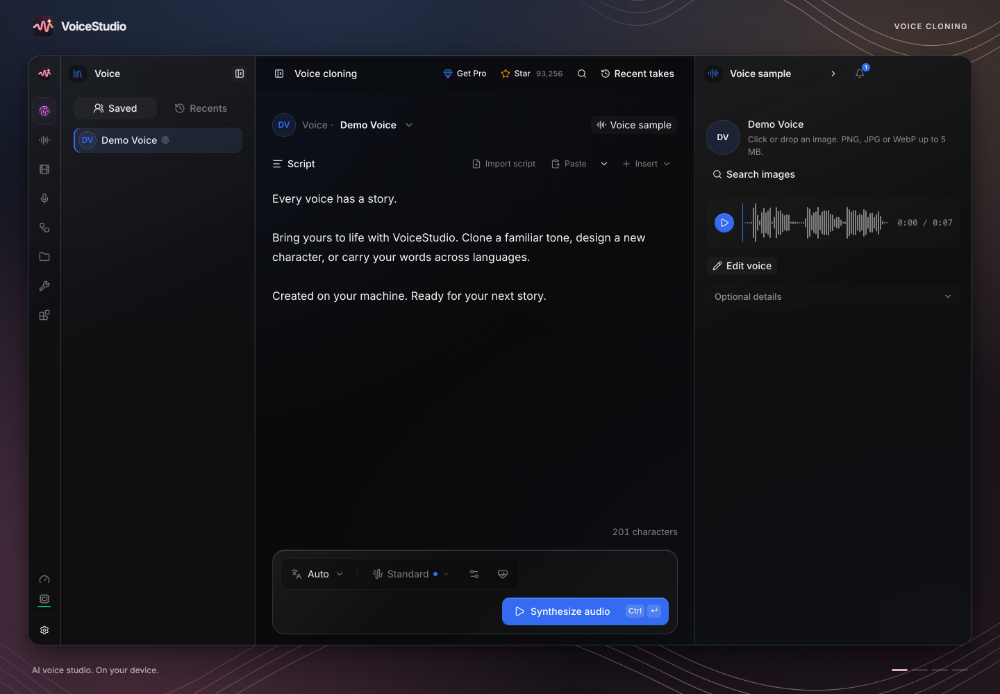
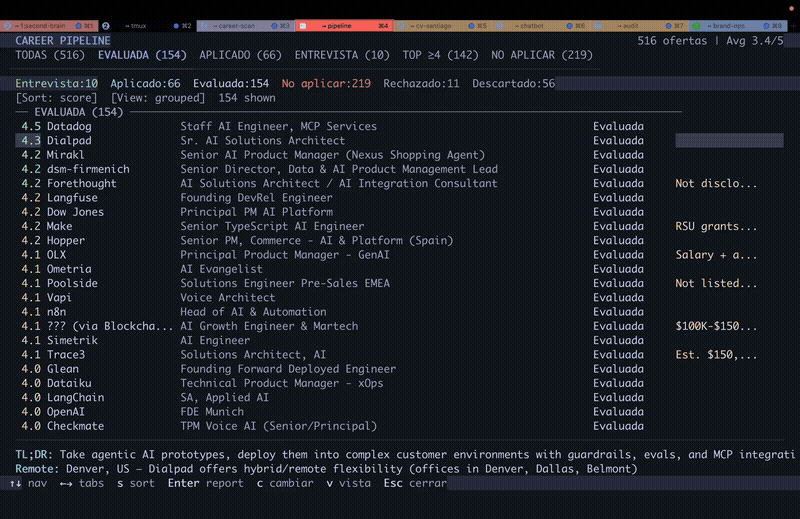
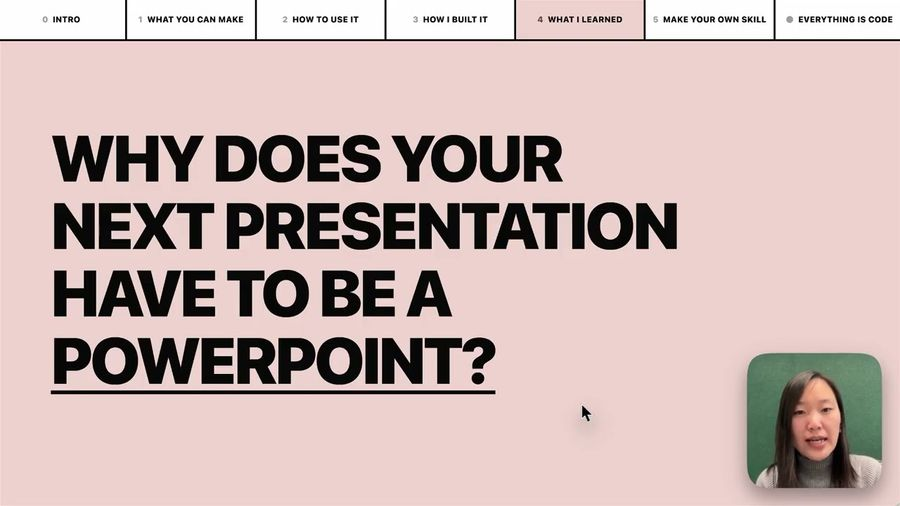
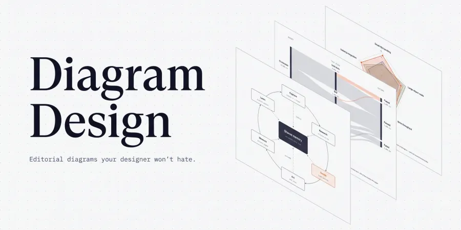
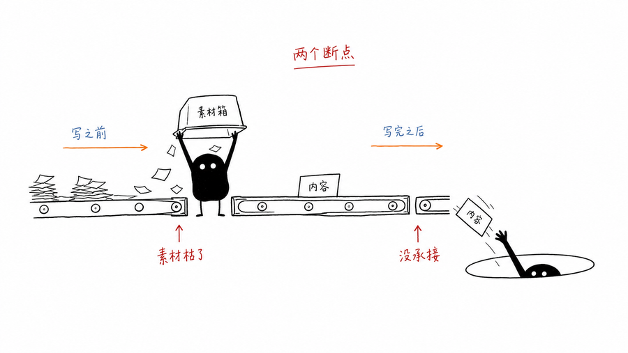
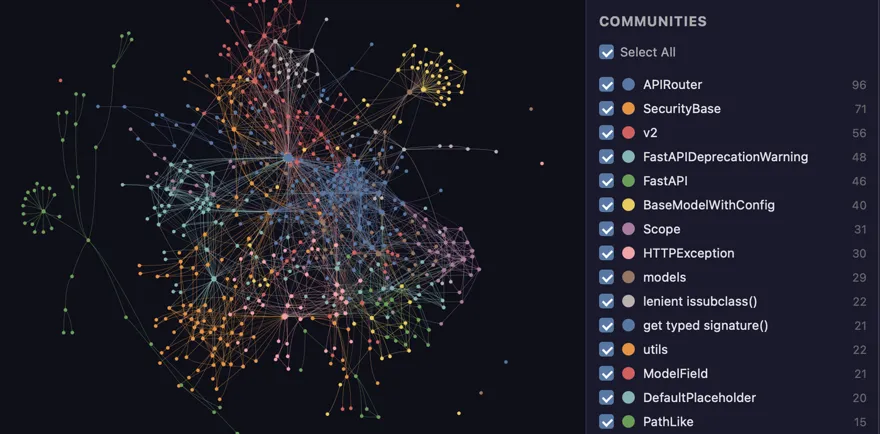
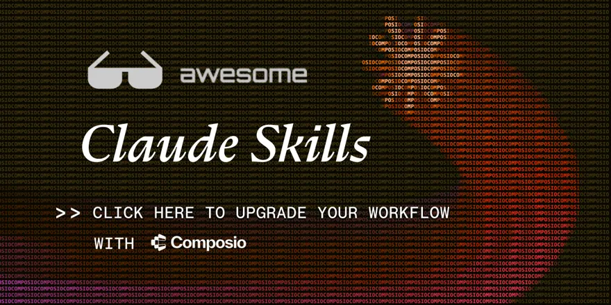
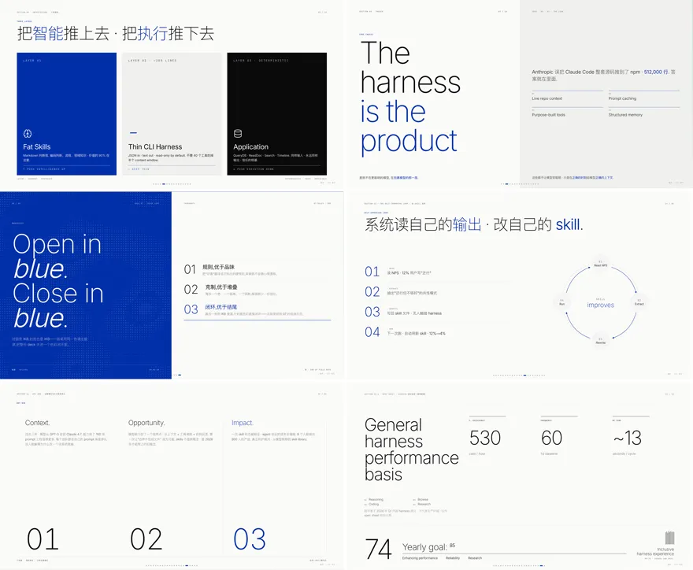

设计与前端UI/UX Pro Max
给 agent 装一套跨平台设计智能：配色、间距、组件规范都现成。做网页、App、小程序界面时先上它，产出不会一眼像模板。
PPT Master
把文档或一个主题变成真正能编辑的原生 PPTX——形状、转场、动画都在。甲方要 .pptx 原件、还要自己改的时候用它。

图表与可视化Archify 架构图
一句话或一段代码变成可点击、能交互的架构图，不是静态截图。要讲清「系统怎么分层、数据怎么流」时，比手画 Visio 快。

视频与动效VoiceStudio 配音
全本地的开源配音棚：克隆音色、设计声音、配音、转写、旁白，覆盖 600 多种语言。视频要旁白又不想上传云端时用它。
GPT Image 提示词库
530+ 案例、20+ 套工业级模板的提示词库，还有同提示词跨版本对比。抄的是结构不是图，出图稳定性提升明显。
Humanizer
英文写作去 AI 痕迹的经典 skill：删掉那些「correct but useless」的表述。写英文稿、发英文帖前先过它。
MarkItDown
微软出的文件转 Markdown 工具：PDF、Word、PPT、Excel、图片都行。喂给模型之前的必备一步，比复制粘贴干净得多。
Agent Reach
给 agent 一副眼睛：读 Twitter、Reddit、YouTube、B 站、小红书，一个 CLI、零 API 费。做舆情和选题调研用。
REA 逆向
用 agent 逆向任何东西：从 App 行为一路挖到原生实现，附带方法论与工具链。分析你有权分析的目标时，它给的是流程而不是零散命令。
Anthropic 官方 Skills
官方 skill 仓库：docx、pdf、pptx、xlsx 等，也是 Agent Skills 标准的事实参考实现。想搞懂 skill 该怎么写就读它。

商业与职场Career Ops 求职
求职 agent：扫招聘站、按你的 CV 给每个岗位打 1-5 分、筛掉不值得投的，再帮你改简历。海投效率翻倍。
DESIGN.md 品牌库
上百个知名产品拆解出的 DESIGN.md 设计规范。挑一份丢进项目，agent 就照着这套视觉语言做页面，不靠你反复描述风格。

幻灯片与演示Frontend Slides
用前端能力做网页幻灯片，翻页、滚动、动效都自由。适合线上分享、要嵌视频或交互的演示。

图表与可视化Diagram Design
38 种编辑级图表版式，输出自包含 HTML + SVG，没有阴影、没有 Mermaid 味。文章配图、文档插图、汇报图都合适。
HyperFrames
写 HTML 就能渲染成视频，专为 agent 设计。要程序化批量出片、又要精确控制每一帧排版时走这条路。

插画与图像小黑怪诞配图
中文章节配图专用：16:9 白底手绘，少量红橙蓝批注，风格统一又带点怪。公众号长文拆分段落用。
中文去 AI 味
消除中文文本里 AI 生成痕迹的汉化版。稿子读起来像人写的，去掉那种工整、对仗、爱总结、动不动就升华的腔调。

知识与记忆Graphify
把代码、文档、SQL 结构、配置和 PDF 一起抽成一张可查询的关系图。系统大到一个脑子装不下时，用它先画出结构。
最近 30 天
以点赞、投票为权重的 agent 搜索引擎，专扫 Reddit、X、YouTube、HN 最近 30 天的讨论，输出带原始来源的报告。判断一个话题「现在到底什么情况」时用它。
Superpowers
一套跨工具的 agent skill 框架，还带完整软件开发方法论：从需求到验证的每个环节都有对应 skill。想给整个团队定「agent 怎么干活」时用它。

套装与合集Awesome Claude Skills
社区维护的 Claude skill 精选目录，按用途分类还带新手上路说明。想找「有没有人已经做过」时先扫它。
Marketing Skills
把 AI 变成一支增长团队：CRO、文案、SEO、投放、邮件各有一组 skill。做增长缺人手时按岗位装。
 设计与前端
设计与前端Open Design 设计台
本地优先的开源 AI 设计工作台，被当成 Claude Design 的平替：一句话出界面稿、改版迭代，还能把结果接进 Figma。想要「全流程留在自己机器上」时用它。

幻灯片与演示归藏 PPT
HTML 幻灯片：杂志编辑风与瑞士网格两套排版，自带配图提示词和低功耗放映模式。想要设计感强的汇报 deck，又不想碰 PPT。